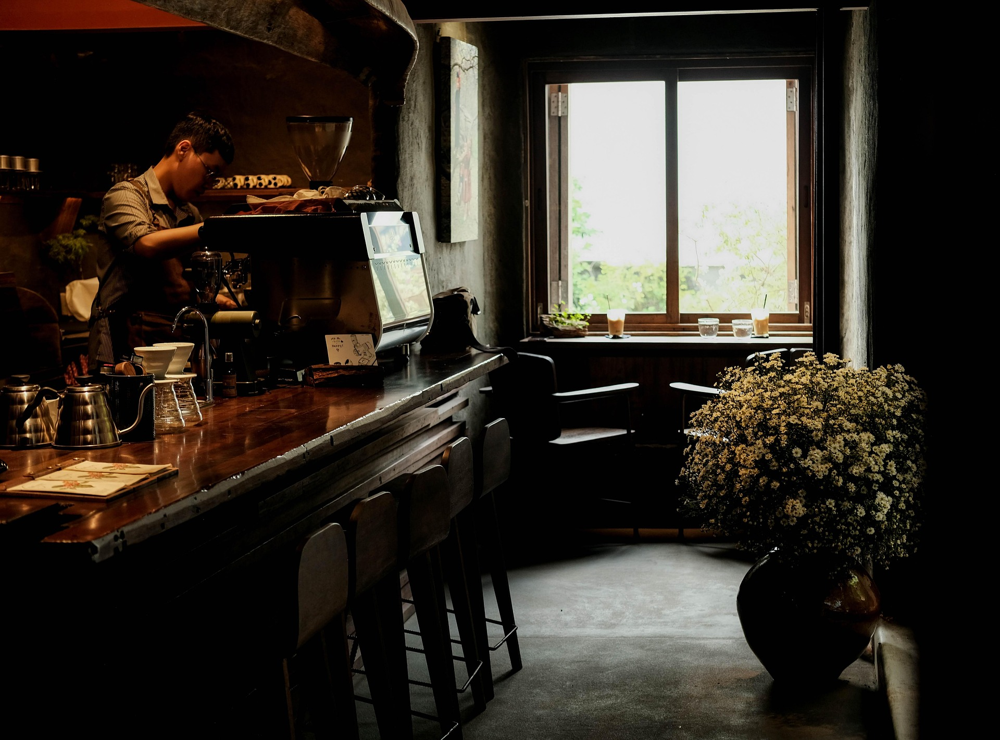

Café de la Abuela nace de una tradición familiar que honra el aroma, el sabor y los momentos compartidos. Cada taza está inspirada en las recetas de nuestras abuelas, que sabían que el mejor café se sirve con amor y una sonrisa.